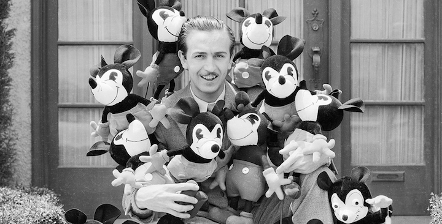
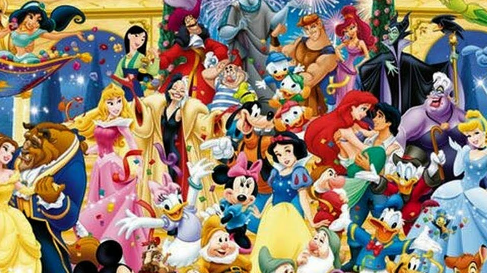
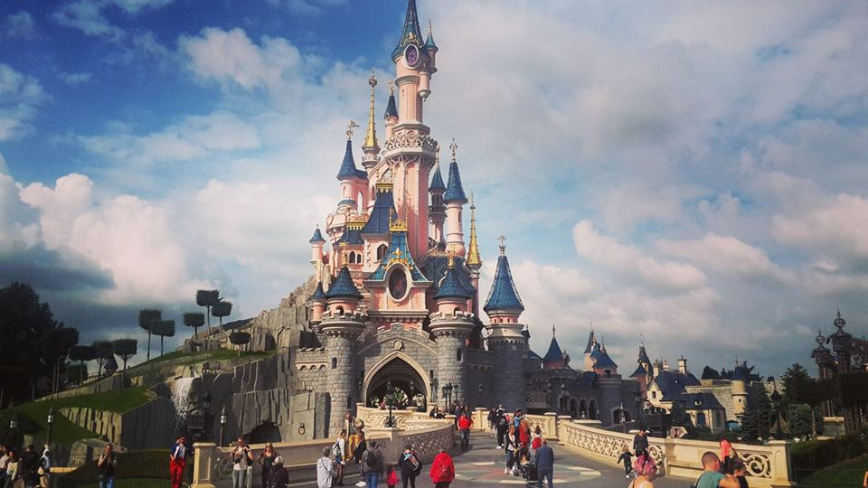

უოლტერ ელიას დისნეი — ამერიკელი ბიზნეს მაგნატი, კინორეჟისორი, ფილანტროპი და გამხმოვანებელი. როგორც მნიშვნელოვანი ფიგურა ამერიკის ანიმაციურ ინდუსტრიაში, ითვლება კულტურულ სიმბოლოდ, რომელიც ცნობილია თავისი გავლენით და წვლილით XX საუკუნის შოუ-ბიზნესში. თავის ძმა როი ო. დისნეისთან ერთად იყო The Walt Disney Company-ს დამაარსებელი. უოლტ დისნეი განსაკუთრებით ცნობილია როგორც კინოპროდიუსერი, პოპულარული შოუმენი, ნოვატორი ანიმაციაში და თემატური პარკების დიზაინში. თავის გუნდთან ერთად შექმნა მრავალი გამოგონილი პერსონაჟი, რომელთა შორის არიან მიკი მაუსი, დონალდ დაკი და გუფი. თავად დისნეი მიკის გამხმოვანებელი იყო. დისნეის თავის სიცოცხლეში მიღებული აქვს ოთხი საპატიო ოსკარი და ჯამში 22 ოსკარი 59 ნომინაციიდან, მათ შორის - ერთ წელიწადში სარეკორდო ოთხი , რის გამოც ინდივიდუალურ რეკორდს ფლობს, როგორც ნომინაციებში, ასევე მიღებულ ოსკართა რაოდენობაში. მას აგრეთვე მიღებული აქვს შვიდი ემის ჯილდო. მისი სახელი დაერქვა დასასვენებელ პარკებს - დისნეილენდს და უოლტ დისნეის მსოფლიოს კურორტს, ისევე, როგორც სხვა ქვეყნებში არსებულ ტოკიოს დისნეის კურორტს, პარიზის დისნეილენდს და ჰონგ-კონგის დისნეილენდს. დისნეი გარდაიცვალა ფილტვის კიბოთი 1966 წლის 15 დეკემბერს ფლორიდაში, მისი ოცნების პროექტის დისნეიუორლდის გახსნამდე რამდენიმე წლით ადრე. დატოვა დიდი მემკვიდრეობა, მათ შორის ურიცხვი მოკლემეტრაჟიანი ანიმაციური და სრულმეტრაჟიანი ფილმი, კომპანია, პარკები და მისი სახელობის ანიმაციური სტუდია, ისევე, როგორც კალიფორნიის ხელოვნების ინსტიტუტი (CalArts).
ბავშვობა
1917 წელს ელაისმა შეიძინა ჟელეს დამამზადებელი ქარხნის წილი ჩიკაგოში და ოჯახი დაბრუნდა იქ.წლის ბოლოს უოლტი ჩაირიცხა მაკკინლის სკოლაში, საღამოს კი დადიოდა ჩიკაგოს სამხატვრო ინსტიტუტში.პარალელურად უოლტი მუშაობდა კომიქსების მხატვრად სკოლის გაზეთში.მისი კომიქსები პატრიოტული სულით იყო სავსე და მეორე მსოფლიო ომს ეხებოდა.16 წლისას მან დატოვა სკოლა და ჯარში გადაწყვიტა წასვლა, თუმცა უოლტი არ აიყვანეს, რადგანაც ასაკით იგი ჯერ ახალგაზრდა იყო. უოლტმა და მისმა მეგობრებმა ალტერნატიული გზა აირჩიეს და „წითელ ჯვარში“ დაიწყეს მუშაობა.მიუხედავად იმისა, რომ მინიმალური ასაკი „წითელ ჯვარში“ ჩასარიცხად 17 წელი უნდა ყოფილიყო, უოლტის დედამ შეცვალა დაბადების მოწმობა, რომელშიც დაწერა, რომ უოლტი 1900 წელს დაიბადა.ამრიგად, უოლტი 17 წლის ითვლებოდა და "წითელმა ჯვარმა" იგი საფრანგეთში გააგზავნა ერთი წლით.მთელი წლის განმავლობაში იგი მათი მანქანის მძღოლად მუშაობდა და საყვარელ საქმიანობასაც ეწეოდა - ხატავდა სასაცილო პერსონაჟების მანქანებზე. ამის შემდეგ უოლტი კანზასში დაბრუნდა, სადაც მისი მხატვრის კარიერა დაიწყო.მისი ძმა როი მუშაობდა ბანკში და მეგობრის მეშვეობით მოიძია უოლტისთვის სამუშაო პესმენ-რუბინის სამხატვრო სტუდიაში.იქ უოლტი ხატავდა რეკლამებს გაზეთებისათვის, ჟურნალებისათვის და კინოთეატრებისათვის.იქ მან ასევე გაიცნო მორცხვი კარიკატურისტი იუბ აივერკსი.ორივე მხატვარს ძალიან მოსწონდა ერთმანეთის ნამუშევრები და დამეგობრდნენ.მოგვიანებით მათ საკუთარი ბიზნესის წამოწყება გადაწყვიტეს. დისნეიმ და აივერკსმა 1920 წლის იანვარში ჩამოაყალიბეს კერძო კომპანია „აივერკსი-დისნეი - კომერციული მხატვრები“„“. გამოუცდელი წყვილი არავის აინტერესებდა და აივერკსმა დროებით დატოვა კომპანია.იგი სამუშაოდ გადავიოდა კანზას სიტის ფილმების სარეკლამო კომპანიაში.დისნეის პრობლემები გაუჩნდა და სასამართლოსთან ჰქონდა საქმე მას შემდეგ, რაც ბიზნეს გაერთიანება მიითვისეს ნიუ იორკელმა ფინანსისტებმა უინკლერმა და მინცმა.
როგორ გამდიდრდა “უოლტ დისნეი კომპანია“
ჰოლივუდი
ლოს-ანჯელესში ჩასულ დისნეის სულ 40 დოლარი და ერთი დაუსრულებელი ანიმაციური ფილმი ჰქონდა ჯიბეში.მაშინ მან პირველად გაიფიქრა, რომ ვერ შესძლებს ანიმაციის სფეროში მუშაობას.დისნეის თქმით, თავდაპირველად მას სურდა ფილმების რეჟისორად მუშაობა.მან ყველა სტუდია შემოიარა და თავისი თავი შესთავაზა, მაგრამ მათ უარი განაცხადეს მის მიღებაზე. რადგანაც კინოფილმების გადაღება არ ანდეს, იგი დაუბრუნდა ანიმაცია.პირველი სტუდია მან მოაწყო ბიძამის რობერტის ფარდულში. დაუსრულებელი ფილმი გაეგზავნა ნიუ იორკელ მარგარეტ უინკლერს.პროექტით დაინტერესდნენ და დისნეიმ დაიწყო მოკლემეტრაჟიანი ანიმაციური სერიების „ალისას საოცრებათა ქვეყანა“ გადაღება, სადაც ანიმაციის გარდა აგრეთვე მონაწილეობდნენ რეალური ადამიანებიც. პარალელურად უოლტი უვლიდა თავის ძმას როის, რომელსაც წარსულში ტუბერკულოზი ჰქონდა.დისნეიმ იგი ჩართო მომავალი სტუდიის ჩამოყალიბების პროცესში, ასაბუთებდა რა ამას იმით, რომ როის გარეშე ფინანსურ მხარეს ვერ მოერევა.დისნეის თხოვნით, ვირჯინია დეივისის (ალისა) ოჯახი საცხოვრებლად გადავიდა სტუდიასთან უფრო ახლოს.ჰოლივუდში, სილვერ ლეიკთან 1939 წლამდე განლაგდა დისნეის ძმების ახალი სტუდია. 1925 წელს დისნეიმ სტუდიაში მოიყვანა ლილიან ბაუნდსი, რომელსაც ფერი უნდა ჩაესხა ნახატებში და ცელულოიდზე.დისნეის შეუყვარდა იგი და ისინი დაქორწინდნენ.ლილიანი მოგვიანებით მდივნის როლსაც ასრულებდა უოლტის სტუდიაში. ალისას კომედიური სერიალი ალისა ჯუნგლებში - 1925 ახალი სერიალი, „ალისას კომედიები“ წარმატებული იყო.ალისას როლი ითამაშე დოუნ ო'დეიმ და მერჟი გეიმ - მას შემდეგ, რაც ვირჯინია დეივისის მშობლებმა აღარ დაუშვეს ბავშვი გადაღებებზე შემცირებული ჰონორარის გამო.როლი ასევე მოსინჯა ლუის ჰარდვიკმაც.1927 წლისათვის, როდესაც სერიალის წარმოება დასრულდა, ყურადღება გადატანილი იქნა ანიმაციურ პერსონაჟებზე, განსაკუთრებით კატა ჯულიუსზე, რომელიც კატა ფელიქსის პროტოტიპად იქცა.ასე რომ დისნეიმ მაინც გადაწყვიტა ანიმაციის გზით წასულიყო. მხიარული ოსვალდი 1927 წლისათვის ჩარლზ მინტცი დაქორწინდა მარგარეტ უინკლერზე და მის ბიზნესზე სრული კონტროლი დაამყარა. მანვე ახალ სერიალზე დაიწყო მუშაობა. სერიალს ერქვა „მხიარული კურდღელი ოსვალდი“. წარმატება ამ სერიალს მალევ მოჰყვა, თუმცა შეიქმნა პრობლემები - თავდაპირველად ოსვალდი შექმნა იუბ აივერკსმა, დისნეის სტუდიის თანამშრომელმა. დიდი სკანდალი, რომელიც პერსონაჟის მითვისებასთან დაკავშირებით აგორდა, გაგრძელდა წლები და, საბოლოოდ, 2006 წელს, დისნეის კომპანიამ დაიბრუნა საავტორო უფლებები ამ პერსონაჟზე. თუმცა, ოსვალდის დაკარგვამ გამოიწვია ის, რომ დისნეი დაუფიქრდა მომავალს და ახალი პერსონაჟი მოიგონა

ტრიუმფი: ფიფქია და შვიდი ჯუჯა
1934 წელს უოლტმა დაიწყო ფიქრი სრულმეტრაჟიან ანიმაციურ ფილმზე. ამის მთავარ მიზეზებად ორი ფაქტორი იქცა - მიკი მაუსის სერიები, რომლებიც ზედიზედ იყო ნაჩვენები კინოთეატრებში, თავის დროზე დიდი პოპულარობით სარგებლობდა. შედეგად, უოლტი დააფიქრა თავად გადაბმული ჩვენების ფენომენმა. მაგრამ მეორე მიზეზი ისიც იყო, რომ ამ დროისათვის სხვა ანიმაციური გმირის, პოპაის თავგადასავლებმა (მაქს ფლეიშერის წარმოების) უფრო დიდი პოპულარობა მოიპოვეს. რა თქმა უნდა, დისნეის შეეძლო კვლავ ძველი გზით მოძრაობა, მაგრამ მან არჩია სრულმეტრაჟიანი ნამუშევრის შექმნა. საზოგადოებამ დისნეის ამ ინიციატივას მხოლოდ ”დისნეის კაპრიზი” უწოდა. ყველა დარწმუნებული იყო, რომ უოლტის სტუდიას ეს პროექტი ბოლოს მოუღებდა. ლილიანი და როიც კი დაეჭვდნენ და უოლტს სთხოვდნენ პროექტის შეჩერებას, მაგრამ იგი კვლავ ჯიუტად ფიქრობდა მომავალ ფილმზე. უოლტმა მანამდე არნახული ნაბიჯიც გადადგა - შუინარის სამხატვრო უნივერსიტეტის პროფესორი, დონ გრეჰემი იქირავა, რათა მას სტუდიაში ტრენინგები ჩაეტარებინა. ”სულელური სიმფონიების” ახალი სერიები მან გამოიყენა რეალისტური ანიმაციის, სპეციალური ეფექტების და მრავალხედიანი კამერის ექსპერიმენტებისათვის. ეს ტრენინგები და საკუთარი თავის დახვეწა სტუდიის ნამუშევრების ხარისხის გასაუმჯობესებლად ჩატარდა. დისნეის საკუთარი გეგმები ჰქონდა სტუდიის ფილმენთან დაკავშირებით და კარგად იცოდა, რა აკლია მის ნამუშევრებს. ფიფქია და შვიდი ჯუჯა მზადდებოდა სამი წლის განმავლობაში. ამ დროისათვის სტუდიის ფინანსური მდგომარეობა არასახარბიელო გახდა. ფილმის დაფინანსება მოხერხდა მხოლოდ მის შემდეგ, რაც უოლტმა მისი დაუსრულებელი ვერსია ამერიკის ბანკს უჩვენა. მან თავისი შთაბეჭდილება მოახდინა და ფილმის დასრულებისათვის აუცილებელი თანხები მიღებული იქნა. საბოლოო შედეგის პრემიერა გაიმართა კართეის მრგალ თეატრში, 1937 წლის 21 დეკემბერს. ფილმის დასასრულს მაყურებელმა დისნეის ახალი ქმნილება ხანგრძლივი ოვაციებით დააჯილდოვა. ”ფიფქია”, ყველაფერთან ერთად, იყო პირველი სრულმეტრაჟიანი და ფერადი ანიმაციური ფილმი. 1938 წელს ფილმი ღია გავიდა კინოთეატრების ეკრანებზე, სადისტრიბუციო კომპანიასთან RKO Radio Pictures დადებული ხელშეკრულების თანახმად. ფიფქია და შვიდი ჯუჯა იქცა 1938 წლის ყველაზე წარმატებულ სრულმეტრაჟიან ფილმად და კინოთეატრებში ჩვენებით 8 მილიონ დოლარზე მეტი მოუტანა დისნეის სტუდიას. მან აგრეთვე მიიღო ოსკარიოსკარი, კერძოდ - ერთი ჩვეულებრივი და სიმბოლურად, შვიდი მცირე ზომის ქანდაკება. შემოსავალმა დისნეის საშუალება მისცა, ბერბენკში (კალიფორნია) აეშენებინა სტუდიის ახალი ოფისი. მისი ექსპლუატაცია 1939 წლის 24 დეკემბერს დაიწყო. ფიფქია და შვიდი ჯუჯა არა მხოლოდ დისნეის წარმატების პიკი იყო, არამედ მისი სტუდიის შექმნილი ანიმაციური ფიმლმების ოქროს ხანის დასაწყისიც. შემდეგი ფილმები იყო პინოქიო, ფანტაზია და ბემბი. პარალელურად, მოკლემეტრაჟიანი ფილმების სერიებიც იქმნებოდა - მიკი მაუსი, დონალდ დაკი, გუფი და პლუტო. ამავე დროს დასრულდა სულელური სიმფონიების ეპოპეაც. ანიმატორმა ფრედ მურმა შეცვალა მიკი მაუსი 1930-იანი წლების მიწურულს, როდესაც აღმოჩნდა, რომ დონალდი უფრო პოპულარული ხდება. მიკი ხომ უოლტის მთავარ ქმნილებად ითვლებოდა.
დისნეილენდის დაგეგმვა
1940-იანი წლებში ჩიკაგოში მგზავრობისას დისნეი ხატავდა გასართობი პარკის ჩანახატებს, სადაც იგი გეგმავდა საკუთარ თანამშრომლების ოჯახებთან ერთად დრო და დრო დასვენებას. ოუკლენდში (კალიფორნია) საბავშვო პარკის ვიზიტისას მას საკუთარი პარკის იდეა ეწვია. თავდაპირველად ეს უნდა ყოფილიყო სტუდიის სამხრეთით მდებარე მცირე ფართი. მაგრამ შემდგომში, ეს კონცეფცია იქცა დისნეილენდად. უოლტი ამ საკითხზე ხუთი წლის განმავლობაში მუშაობდა და საკუთარი კომპანიის ქვეგანაყოფიც კი შექმნა, სახელწოდებით WED Enterprises, რომელსაც უნდა ემუშავა პარკის დაგეგმვასა და აშენებაზე. ამ ჯგუფს შეუერთდა ანიმატორების მცირე ჯგუფიც. საქმეში ისევ სურდათ ამერიკის ბანკის ჩართვა და დისნეიმ, ჰერბერტ რაიმანის დახმარებით შექმნა პარკის ზედხედი. ჰერბერტს მან ასე მიმართა: ”ჰერბი, მე უბრალოდ მსურს რომ ეს პარკი ისე გამოიყურებოდეს, როგორც სხვა არაფერი გამოიყურება ამ მსოფლიოში. და მას უნდა უვლიდეს ირგვლივ მატარებელი”. მატარებლის იდეა ამ პარკისათვის დისნეის სწორედ კეროლვუდის მინი-რკინიგზის შემდეგ ეწვია. იქ იგი ხშირად ატარებდა თავის შვილებსა და მეგობრებს.

გარდაცვალება
1966 წელს დისნეის თანამონაწილეობა დასრულდა. სიგარეტის რეგულარული მოწევის შედეგად მას ფილტვის კიბო გაუჩნდა. იგი დააწვინეს სტუდიასთან ახლოს განლაგებულ სამედიცინო ცენტრში. აგრეთვე იგი საჭიროებდა ოპერაციას - ძველი ტრავმის გამო, რომელიც პოლოს თამაშის დროს მიიღო. ოპერაციამდე ექიმებმა აღმოაჩინეს, რომ მარცხენა ფილტვზე მას დიდი სიმსივნე ჰქონდა. ხუთი დღის შემდეგ იგი დაბრუნდა საავადმყოფოში, რათა ოპერაციის პროცედურა გაევლო, მაგრამ ამ დროისათვის სიმსივნე უფრო გაიზარდა. ექიმებმა უთხრეს მას, რომ სულ ცხოვრების ექვსი თვე დარჩა. ქიმიოთერაპიის პროცედურების შემდეგ დისნეი და მისი მეუღლე ისვენებდნენ კალიფორნიაში, შემდეგ კი შინ დაბრუნდნენ. 1966 წლის 30 ნოემბერს დისნეი დაეცა საკუთარ სახლში, მაგრამ იგი გონს მოიყვანეს პარამედიკოსებმა. უოლტი წაყვანილი იქნა საავადმყოფოში, მაგრამ გარდაიცვალა, 1966 წლის 15 დეკემბერს, დილის 9:30-ზე. მისი კრემაცია ჩატარდა იმავე წლის 17 დეკემბერს. მისი ფერფლი განისვენებს გლენდეილში განლაგებულ პარკში (კალიფორნია). როი დისნეიმ განაგრძო ფლორიდის პროექტზე მუშაობა, რომელსაც ამიერიდან ეწოდა Walt Disney World Resort. სიმღერების ავტორი რობერტ ბ. შერმანი იხსენებს დისნეის უკანასკნელ დღეს სტუდიაში: „იგი ამოვიდა ანიმაციური სტუდიის მესამე სართულზე. იგი გაესაუბრა ყველას, ვინც იმჟამად მუშაობდა ახალ ფილმზე, „უბედნიერესი მილიონერი“. მან უთხრა, რა მოსწონს და რა - არა, რა უნდა შეიცვალოს. როდესაც დაასრულა, მოგვიბრუნდა, გაგვიღიმა და გვითხრა - „კარგად იმუშავეთ, ბიჭებო“. და გავიდა სტუდიიდან. მაშინ უკანასკნელად ვნახეთ“. წლების განმავლობაში ვრცელდება ჭორი, თითქოს დისნეი დროებით გაყინეს და მისი გაყინული სხეული ინახება „კარიბის მეკობრეების“ ატრაქციონის ქვეშ, დისნეილენდში. თუმცა, ეს გამორიცხულია, რადგანაც გვამი ოფიციალურად დაუქვემდებარეს კრემაციას და პირველი ოფიციალური გაყინვა მოხდა ერთი თვის შემდეგ, ჯეიმზ ბედფორდის გაყინვით. უკანასკნელი ფილმები, რომლებზეც მუშაობდა დისნეი, იყო „ჯუნგლების წიგნი“ და „უბედნიერესი მილიონერი“ (1967).